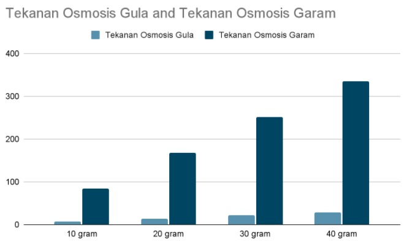

Praktikum Fisika, Biologi, Kimia, dan Matematika
Penyajian Data Osmosis

Tujuan
Menyajikan data berupa tabel, grafik cartesius, diagram batang, diagram garis, histogram, atau ogive dan mengambil kesimpulan dari hasil data percobaan osmosis pada kentang menggunakan larutan garam dan gula
Tabel Perhitungan
| No | Larutan | Tekanan Osmosis Gula | Tekanan Osmosis Garam | |
| Gula | Garam | |||
| 1 | 10 gram (Advenia) |
10 gram (Advenia) |
π = M x R x T π = 10⁄342 x 1000⁄100 x 0,082 x 298 π = 7,15 atm |
π = i x M x R x T π = (2 x 10⁄58,5 x 1000⁄100) x 0,082 x 298 π = 83,5 atm |
| 2 | 20 gram (Ferry) |
20 gram (Ferry) |
π = 20⁄342 x 1000⁄100 x 0,082 x 298 π = 14,29 atm |
π = (2 x 20⁄58,5 x 1000⁄100) x 0,082 x 298 π = 167,1 atm |
| 3 | 30 gram (Ricky) |
30 gram (Ricky) |
π = 30⁄342 x 1000⁄100 x 0,082 x 298 π = 21,44 atm |
π = (2 x 30⁄58,5 x 1000⁄100) x 0,082 x 298 π = 250,63 atm |
| 4 | 40 gram (Steven Y) |
40 gram (Steven Y) |
π = 40⁄342 x 1000⁄100 x 0,082 x 298 π = 28,58 atm |
π = (2 x 40⁄58,5 x 1000⁄100) x 0,082 x 298 π = 334,2 atm |
Penyajian Data Osmosis
